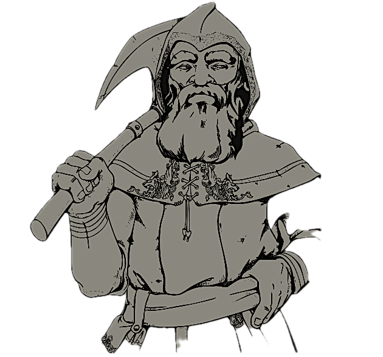
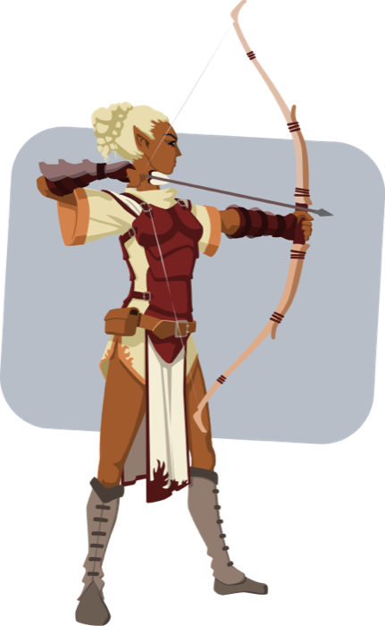
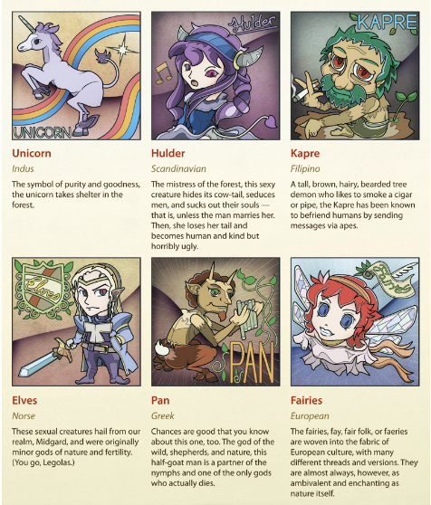
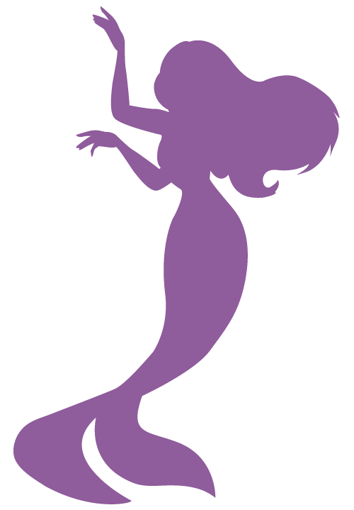

Connections to Nature |
 Magicians/Sorcerers:

DwarvesThey are naturally connected to the environment in active and practical ways, making it their lifestyles. They are able to extract from their environment and use it as their own. This makes them known for their resourcefulness, skill in art and forging, as well and smarts. In myths, they are considered kind and gentle resembling the calm aspects of nature. ElvesSmaller, yet more cunning than humans, they are often perceived with long pointed ears, large eyes, and a typically beautiful appearance. They posses a talent for woodland magic and can even tame spirits in some stories. In others, they could be seen to have connections with minor godhood (due to their longer lifespans). | |
 MythologyBased on nature and its phenomena. Was formed to explain these phenomenas, as well as to teach lessons to those who heard the stories to do better in life. Added elements in these stories originally formed in poetry and oral storytelling and/or tradition as a form of culture and recording history. |
 The WoodsA common setting for heros to adventure through, as well as a place wonderfully crafted for storing mysteries and magic. Transformation and spirituality are themes that the trees of the forests represent, and it is considered the home for a majority of mythical beings with varied characteristics and abilities. | |
|
 Avasflowers.net Mythical CreaturesSometimes, creatures in myths often are variations or combinations of existing animals. They often time either serve as obstacles, guides, or simply reflections of human nature. Human tendencies are often shown through the actions of these creatures in stories, and they are often eye-opening to what someone can be capable of doing. | ||
 DragonsThey are mostly independent creatures, and are in multiple mythological stories. Often times they represent greed and power due to their tendency for hoarding gold and ability to breathe fire. They do serve as allusions to human greed and crave for power. |

FairiesFairies can be seen as either cunning, or sweet and exciting. These creatures are on the smaller side as most are, and they can be good or evil. Not all of them carry wands, and not all of them intend to grant wishes for humans either. They have the ability to cause chaos, deceit, an disharmony if they want to. Overall, these creatures are neutral when they want to be, and it depends on the myth told to really find out. | |
Learn More! If you click on this image, you'll get to travel to a link with more information containing more about mythology and nature. If you're interested, you can read about more. | ||
More Connections
- Mermaid are often known as kind of evil sirens. Though there is a difference between the two, they mostly came to be popular due to hhysterical sailors not being able to differentiate them with manatees. Yikes.
- The forest, known for its mystery and unknown tales, is still the primary source for the lore of many stories. Various animals, obstacles, and strengths all come from the source of nature.
- The moon, often a symbol of the night, is often presented via godly figures, such as Selene, Artemis, Isis, Chandra, and many more. It had the connotation of determining time and fertility, as well as controlling darkness and the tides.
- The Sun is a figure of light and magnificence, and many solar deities have either been known as the monarchs of immortals, or are in higher positions of the hierarchy. Apollo, Ra, Surya, Helios, and Horus are only some of the many who represent the sun in mythology. The sun is often a symbol of hope, new beginning, illumination, and illusion is many fairytales.
- Royalty are often depicted as chosen by a god or many gods, and sometimes present as gods themselves, even when they are not. Many royalty come from bloodlines who are "chosen by the gods" and are fit to rule due to that, which is why there are many stories and myths about rulers meeting karma due to their eventual greed for power.
- Lastly, we have unicorns. Unicorns are great because they are ingrained in myths as earth bound creatures with horns that have magical powers. However, in older tales, they often were describes as donkeys with rainbow colored horns. Despite the first art of the unicorn coming from Mesopotamian works, the Bible depicts it as a magical creature who only appears and follows when a virgin maiden is stood before it.
